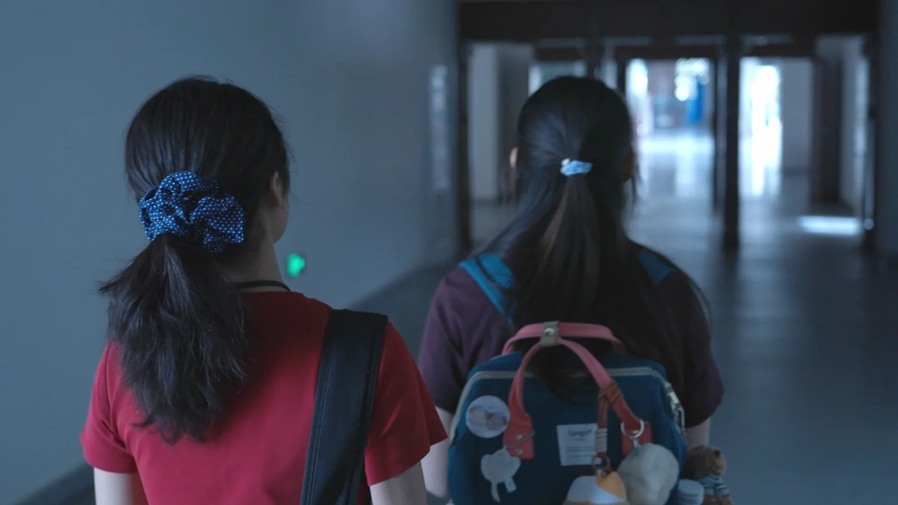
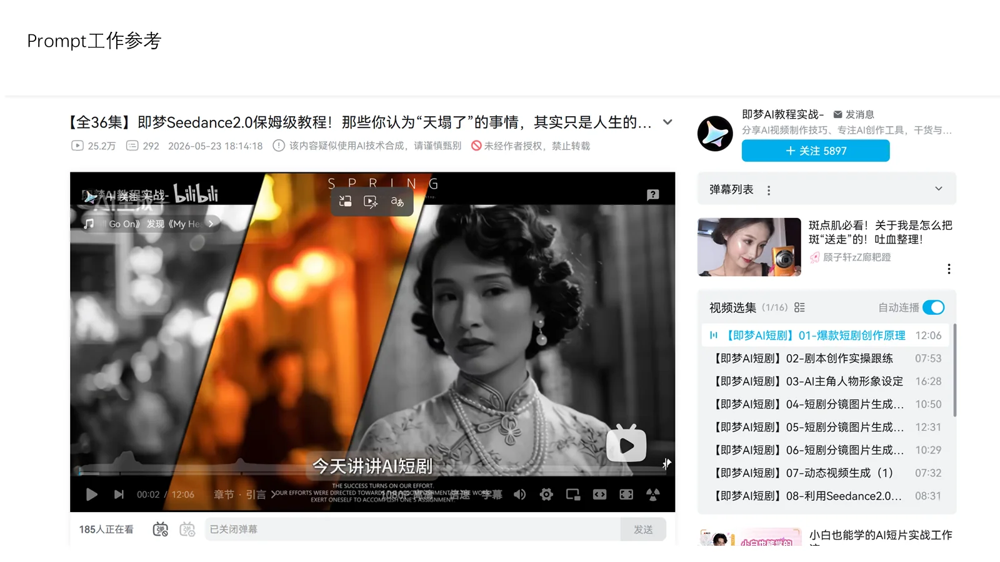
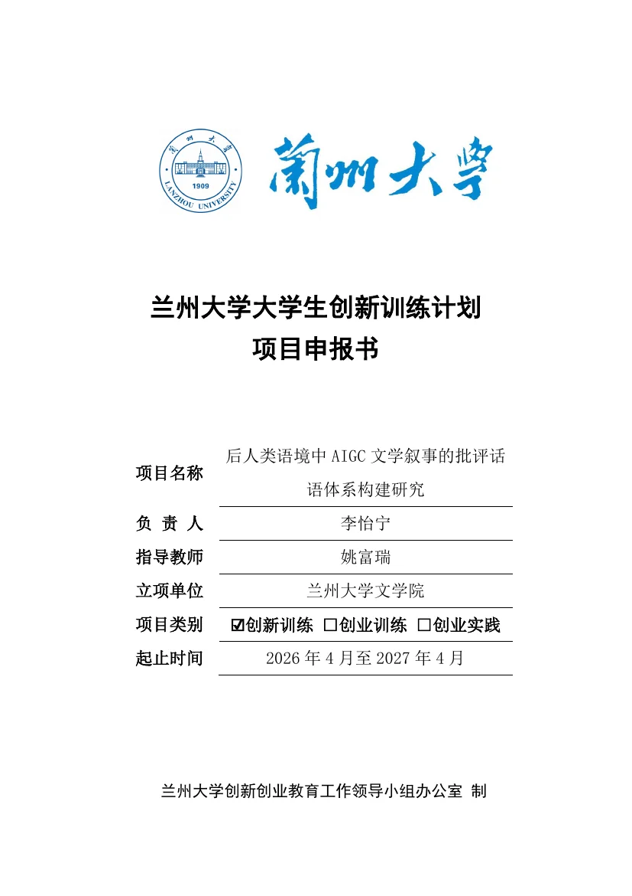

Selected projects / 01—03
三种工作状态，
同一套推进方式。
先看一句话定位，再进入项目页看决策、证据和反思。页面可独立分享，也可从简历直接跳转。

01 / FILM
《我们灿烂的阴沉》
把“既憎恶又信赖”的女性友谊，转译成剧本结构、光线、空间与演员关系。
导演 / 制片 · 63 秒版本
02 / AIGC
《Ελένη》
火石杯 AIGC 项目
从创意方向到制作排期，搭建一套能让学生团队协同工作的 AIGC 影像流程。
项目主导 / 创意统筹 · 筹备中
03 / RESEARCH
AI × 人文
批评话语研究
用行动者网络理论追踪 Prompt、模型、数据、平台与人工修订如何共同生成文本。
技术网络研究 / 数字人文方法WORK MODE主导从问题定义开始负责推进
OUTPUT过程证据让判断可以被看见
METHOD拆解把创意转成流程和节点
ATTITUDE诚实完成度与计划状态分开写
How to read
每一页都回答
三个问题。
01
我在负责什么？
把“参与”拆成明确角色、边界和关键动作。
02
我做了什么判断？
留下删改、取舍、流程设计和风险处理的痕迹。
03
现在走到哪一步？
已完成、进行中与预期成果分层呈现，不混淆状态。